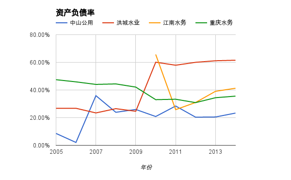
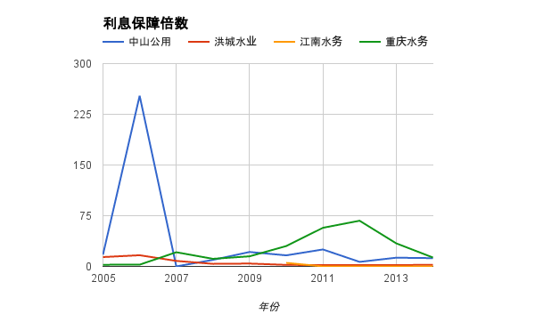
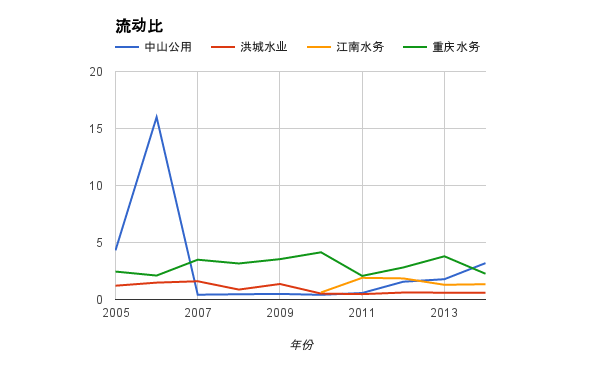
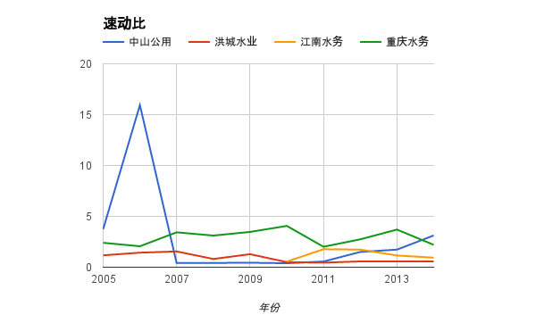
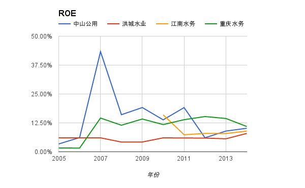

风险分析¶
风险分析分为两个部分：
- 财务风险主要通过对比资产负债率、利息保障倍数、流动比和速动比。分析发现洪城水业的财务风险非常高，很可能出现现金流断裂的危险，2017年的公司债券本金偿付暂时也没有足够的能力。其他三家公司财务风险较低。
- 政策风险主要集中在对价格的行政干预和特许经营权的续约。价格的行政干预是一把双刃剑，一方面限制了公司的过高的盈利，但另一方面也保证了合理的盈利水平。特许经营权普遍有效期在20-30年，之后是否能够成功续约，尤其是一些BOT项目，则存在一定的政策风险。
财务风险¶
水务行业普遍现金充沛，资产负债率低，这里分析的中山公用，江南水务和重庆水务就符合这些特征。不乏例外的是洪城水业，资产负债率超过60%，还是计入了24亿特许经营权的资产，若不考虑，资产负债率高达100%。同时洪城水业的利息保障倍数过低，流动比和速动比过低，未来两年内面临极高的还债压力，2017年到期的公司债券存在一定的违约风险。
资产负债率¶
可以看出，洪城水业的资产负债率是最高的，而最低的是重庆水务，江南水务自从2010年IPO资产负债率就急剧下降，这个很好理解。中山公用的资产负债率则是稳定下降。 在简单的判断孰优孰劣之前，我们还要看看这些公司的主要资产和负债分别是什么
| 单位：百万 | 流动资产 | 非流动资产 | 流动负债 | 非流动负债 |
| 中山公用 | 1650.67 | 5513.4 | 516.74 | 1802.73 |
| 洪城水业 | 629.73 | 4338.88 | 1065.9 | 1991.08 |
| 江南水务 | 1672.56 | 1701.69 | 1240.06 | 156.11 |
| 重庆水务 | 8821.19 | 11749.73 | 3902.49 | 3421.97 |
仔细分析这些公司的资产和负债，却会发现一个惊人的秘密。洪城水业高达61%的资产负债率，居然是在计提了20亿的特许经营权的情况下。其他水务公司都只把土地使用权计入了无形资产。除去这20亿特许经营权，洪城水业的资产负债率是100%！
利息保障倍数¶
从利息保障倍数来看，江南水务无需偿还贷款（在图里数值为0），洪城水业为2，中山公用和重庆水务为12。洪城水业的偿债能力还是值得担忧的，2014年息税前利润为3.1亿，需偿还利息1.3亿元。需偿还的长期借债20亿，包括长期借款14亿，应付债券5亿（面息5.88%）。2015年到期的长期借债有1.35亿，2017年5月为公司偿还企业债（5亿本金）的年份，而现在公司只有6.2亿的流动资产，包括2.9亿的现金。所以明年还款压力巨大。虽然有母公司担保，但仍然存在违约风险。
流动比和速动比¶
从流动比和速动比来看，洪城水业则是更加危险，仅有接近0.5的流动比和速动比。
| 单位：百万 | 现金 | 应收账款 | 应付账款 | 预收账款 |
| 洪城水业 | 294.14 | 244.29 | 347.21 | 43.81 |
其中应收账款里面75%是一年以内的，欠款普遍是未结算的水费和污水处理费 。而应付账款主要是未付工程款，一半是一年以内，一半是一年以上。总体而言，这样的流动比和速动比过低，公司随时可能陷入资金周转不灵的困境。
接下来是江南水务1.5，但由于它没有长期负债，所以偿债压力小。其余两个公司流动速动比均在2以上，资金风险较小。
 政策风险¶
特许经营权¶
除了价格上的干预，水务公司普遍还面临另外一个政策风险，就是特许经营权的到期续约问题。现在政府授予的经营权普遍是20～30年，尤其是一些BOT项目，按合同到期后将移交给当地政府。伴随国家鼓励民营资本、外资进入水务行业，这些特许经营权到期之后能否成功续约是一个非常重要的政策风险。但由于现在大部分的经营权期限才刚刚开始，普遍要到2030年左右才到期。大部分的水务公司也是由当地国资委控股，近期风险不大，但长期需要保持紧密关注。
定价权¶
水务公司在获得政府授予的特许经营权的同时，也丧失了自主定价权。大部分的特许经营权在制定的时候，依据《城市供水价格管理办法》（计价格[1998]1810 号）规定“供水企业合理盈利的平均水平应当是净资产利润率 8—10%。从过去十年的情况来看，水务公司基本上是获得了最高的净资产收益率，但普遍也没有超过15%。中山公用在2011年之前ROE普遍高于15%，是因为市场租赁和客运两个业务占了营业收入的30%，但同时净利润率可以达到50%，拉高了净资产收益率。
一般国际上认为用水消费支出占到人均可支配收入的 3%是合理的，目前中国用水消费支出不及人均可支配收入的 1%~2%4， 水价具有一定的上调空间，合理提高水价可以改善供水企业经营效益，使供水企业有意愿投资于改善服务和提高水质。显然自来水价格和污水处理价格会对公司的盈利产生重大的影响。例如在最近的两个例子里面：
- 2014年4月1日开始，南昌实行阶梯水价，同时每吨提价0.4元，这直接给洪城水业营业收入增加近一亿元。
- 2014年重庆市政府下调了第三期的污水处理采购价格（下降0.47元），这也直接减少了重庆水务的净利润3.6亿元。
公司盈利对于水价的敏感性其实自然的带来了两个潜在的利好： - 关注水价长期未变动的公司
鉴于物价水平不断上升，水价一般两到三年会重新制定。所以如果所在区域的水价和污水处理价格距离上次调整有一段时间，则可以期待在近期会有调整，从而对公司的盈利有较大影响。例如瀚蓝环境所供应的佛山市南海区，上次水价调整还是在2010年。但正如重庆水务的污水处理的例子，政府可能会决定下调，而非上调水价。
- 关注尚未实行阶梯水价的公司
从倡导节能环保的角度看，阶梯水价、电价将成为主流趋势。在所分析的水务上市公司中，仅有南昌和武汉实行了阶梯水价，重庆马上召开听证会。阶梯水价的实行则会大概率的增加公司的盈利。